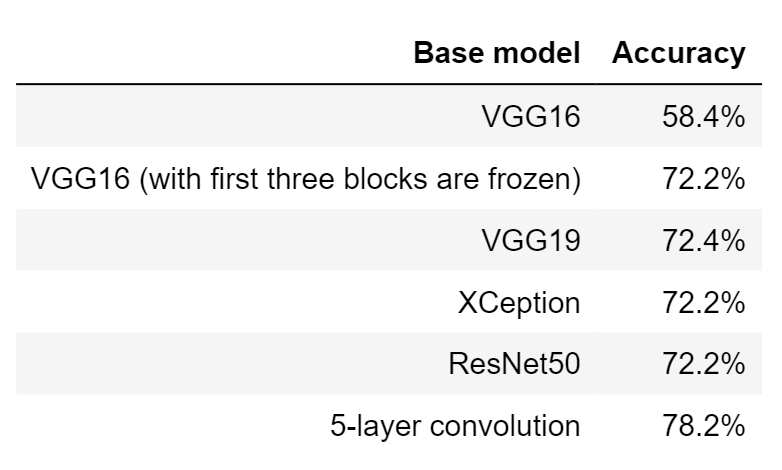

Network Analysis of the Primary Healthcare Facility Referral System in the Philippines
In the Philippines, rice farming industry is very dominant encompassing over 10 million Filipinos. However, these families earn as low as 10 pesos due to the current economy in the industry. Add this to the fact that 37% of their production are lost due to pests and diseases.
This study aims to help farmers by early detection of disease through rice leaf image processing using convolutional neural networks. The model is trained on the Rice Disease Image Dataset by Huy Minh Do which includes over 3000 rice leaf images. Over 4 categories: Leaf Blast, Brown Spot, Hispa, and Healthy; the model performs well at 78.2% accuracy. We also looked at how it performs on classifying a healthy rice leaf and found that the model performed even better at 92.2%. Furthermore, we saw that the model is capable even for cases where the symptoms of the disease are still very small. This model gives farmers ample time to potentially save their crops, have better yield, and save cost from fertilizers and pesticides.
The data used for this project is Rice Diseases Image Dataset compiled by Huy Minh Do and uploaded in Kaggle. This consists of 3355 images of isolated rice leaves with four classifications: Healthy (1488) or afflicted with one of the diseases: Hispa (565), Brown Spot (523), or Leaf Blast (779). The image sizes range from 734 by 734 pixels to 3120 by 3120 pixels. Sample images of the dataset for each classification is shown below.
Before any modeling or classification is performed on the images, several image pre-processing steps must be performed first.
To account for any limitations that may arise due to camera specifications, all images are reshaped to 300 by 300 pixels, regardless of initial shape. In doing so, the model that will be trained in the succeeding parts will be applicable to even low-quality images.
After reshaping, the foreground of the image, i.e. the actual leaf, must be separated from the background to reduce noise and data leakage, which would then lead to easier model training. With this, we need to do automated background removal such that an actual photo not taken in an isolated environment can be classified properly by our model.
These are the steps taken to remove the background per image:
To account for different environments upon taking the picture, e.g. rotated images, shifted objects, zoomed in pictures, image augmentation is performed. The augmented images will be transformed versions of the dataset by randomly rotating the image up to 30 ∘ , shifting the image vertically or horizontally up to 15% of the image length, shearing the image up to 20 ∘ , and zooming in the image 0.8x to 1.2x.
For the modeling, we used different pre-trained models and one manually made model to classify the images. Six architectures were used for this project:
Training all the models discussed with the processed images, the accuracy of each model on a validation set is shown in Table 1. Comparing the different models, the model trained from top to bottom yielded the highest accuracy at 78.2%.
Looking further into the best model and how well it predicts each class, an 85.3% accuracy was found for brown spot, 54.4% for hispa, and 62.0% for leaf blast. On the other hand for healthy rice leaves, it was classified accurately 92.2% of the time. From this, discrepancies on prediction power of the model to different classifications can be observed. Except for brown spots, the model only accurately predicts more than half of rice leaves with disease.
This can be attributed to the dataset used wherein the progression of the disease on the leaves were at its initial stages, so the symptoms are not that developed yet. While the model suffers from relatively low accuracy because of this, the power to predict disease at an earlier stage would give the farmers the opportunity to treat the diseases even before it spreads. This would save them time and energy that they have limited amount of and allow them to focus on the growth of their crops with less worries. That said, seeing how effective the model is on predicting if healthy rice leaves are actually healthy, it can prevent farmers from unnecessarily providing treatment when the plants are actually healthy.
Three different classifications of rice leaf diseases were studied and compared with the healthy rice leaf using the convolutional neural network. Using more than 3000 images as training data and different image pre-processing techniques, we were able to identify what type of disease a leaf has with 78.2% accuracy. Diving deeper, we can accurately classify a healthy leaf as healthy which would aid the farmers save resources by not treating the already healthy plants.
For future studies, we recommend to improve the accuracy of prediction by exploring other network architecture or adding layers or nodes to the current model, scale the project to other diseases for the model to be more general, and, lastly, consult with farmers and consider their input into the pre-processing and deployment of the model.
The authors would like to acknowledge our Machine Learning 2.0 professors, Prof. Christopher Monterola, and Prof. Erika Legara for all their guidance and support for the completion of this project.
If you have any questions regarding the analysis or wish to have a copy of the report, please contact me via e-mail or LinkedIn
Network Analysis of the Primary Healthcare Facility Referral System in the Philippines
If you have any questions, please contact me through the following: